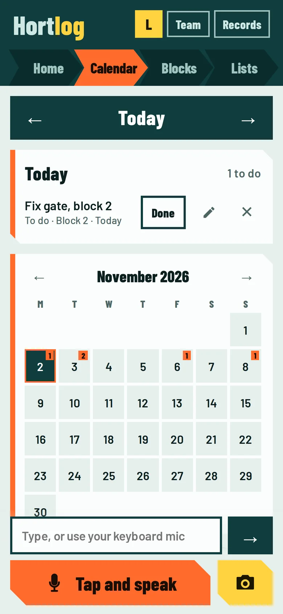
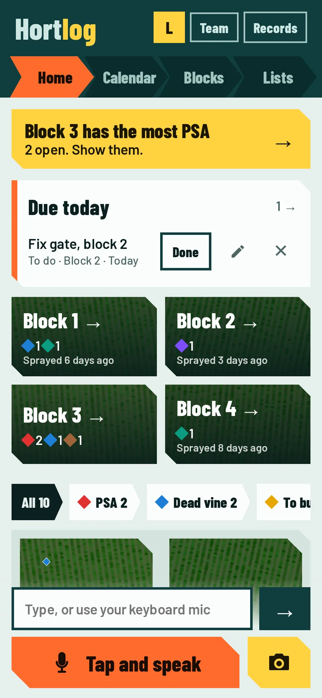
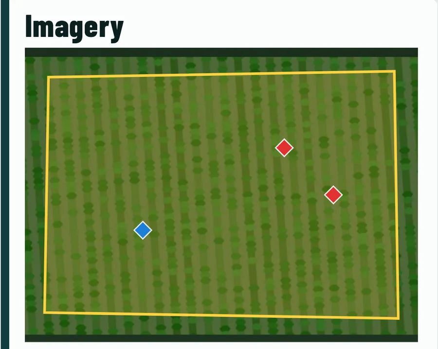
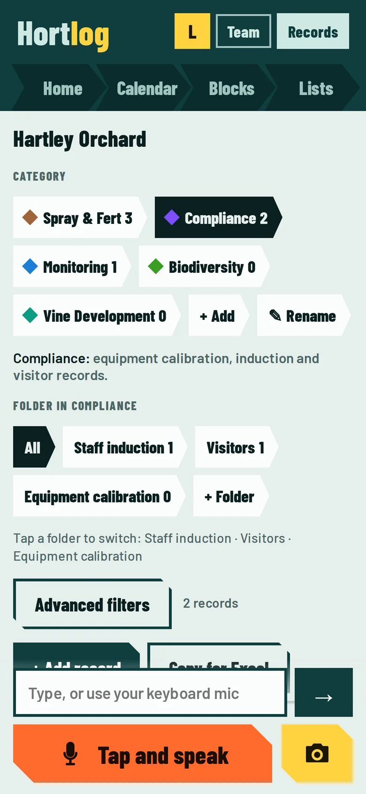

For New Zealand growers
Hortlog is the orchard notebook that listens. Say what you see. It files the job, pins the PSA on your block map, tells the crew and keeps your audit records ready.


What you get back
Say it once, wherever you are in the orchard. Hortlog does the rest.
Every job, spray and problem is filed and dated the moment you say it, and it waits on your calendar.
Every PSA and dead vine is pinned on the aerial map of its block, so anyone can walk straight to it.
Records are kept as you go. When the auditor rings, your audit pack is one tap away.
Spray alerts, assigned jobs and morning reminders reach the right people before they walk in.
What it does
Tap the orange button and say it the way you would say it to your foreman. Hortlog works out what it is, which block, and when.
Your blocks sit on real LINZ aerial imagery. PSA and dead vines show as pins, so the whole team knows exactly where to look.

A calendar the whole orchard shares. Tap Overdue and it opens straight on the late jobs. Tap a day in Coming up and it jumps there.
Records are filed as you go, in the folders an auditor expects: Spray and Fert, Compliance, Monitoring, Biodiversity and Vine Development.

Built for the orchard
Hortlog opens fast and keeps working when the signal drops. It catches up when you are back in range.
No app store needed. Open it in your phone’s browser and add it to your Home Screen.
Only people in your orchard see your records. Built to follow the New Zealand Privacy Act 2020.
The team is told when spraying is on, and the person who logged it is not pinged about their own entry.
Everyone in the orchard
Invite your whole team. Each person sees what suits their job, and nothing more.
Runs the orchard. Sets up blocks, invites and manages the team, and sees and exports every record.
Looks after the day to day. Sets up blocks, manages the team and exports your records.
Leads a crew. Adds and assigns jobs, sets up blocks and exports records.
Works in the blocks. Logs jobs, sprays, PSA and photos by voice and sees their own jobs.
Hired in for a job. Sees only the blocks they are given, and never your spray records.
Questions
No. Hortlog is a web app. Open it in your phone’s browser and add it to your Home Screen. It works like an app.
It opens and keeps working with patchy signal. Voice logging uses your phone’s speech recognition, so that part needs a connection on most phones.
Only people you invite to your orchard, and each person only sees what their role allows. A contractor, for example, sees only the blocks they were given and no spray records.
Yes. Records are filed into the usual folders as you go, and the audit pack gives you Excel files and your signed documents in one zip.
Any time. Export to Excel or PDF, and you can delete your account yourself from Settings.
Hortlog is built for Android first and tested most on Android. It runs in iPhone browsers too, and we are testing that now. Tell us how it goes.
It takes a few minutes to set up. Say your first job out loud and see where it lands.